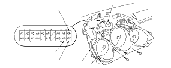

Turn Signal/Hazard Flasher Control Circuit Input Test
Remove the gauge assembly.
Disconnect the 20P connector (A) from the gauge assembly (B).
Make these input tests at the gauge 20P connector terminals.
If any test indicates a problem, find and correct the cause, then recheck the system.
If all the input tests prove OK, the turn signal/hazard relay must be faulty; replace it.
Cavity
Wire
Test condition
Test: Desired result
Possible cause if result is not obtained
A19
BLK
Under all conditions
Check for continuity to ground:
There should be continuity.
Poor ground (G401)
An open in the wire
A10
*
A20
GRN/WHT
*
BLK/WHT
Connect A10 and A20 terminals, then hazard warning switch ON
Check the hazard warning lights:
Hazard warning lights should come on.
Poor ground (G201, G301, G401, G502)
Faulty hazard warning switch
An open in the wire
A10
GRN/WHT
Ignition switch ON (II)
Check for voltage to ground:
There should be battery voltage.
Blown No. 5 (10 A) fuse in the under-dash fuse/relay box
Faulty hazard warning switch
An open in the wire
Hazard warning switch ON
Check for voltage to ground:
There should be battery voltage.
Blown No. 14 (10 A) fuse in the under-hood fuse/relay box
Faulty hazard warning switch
An open in the wire
